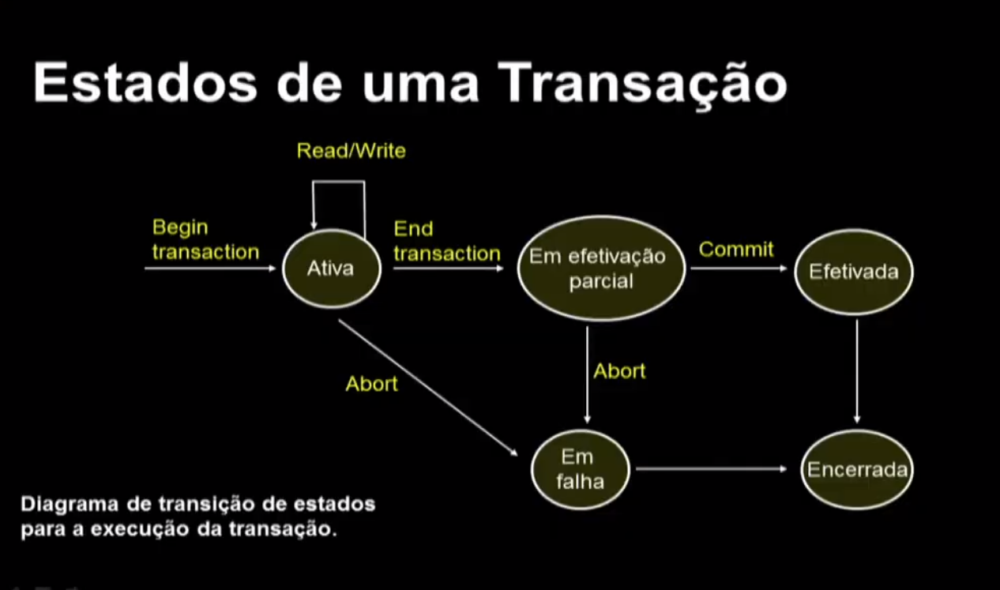
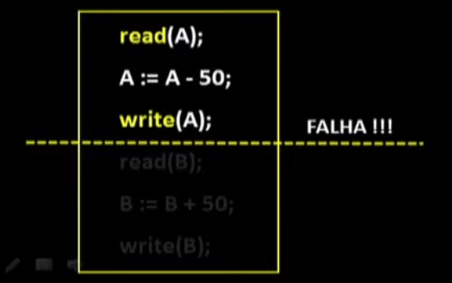
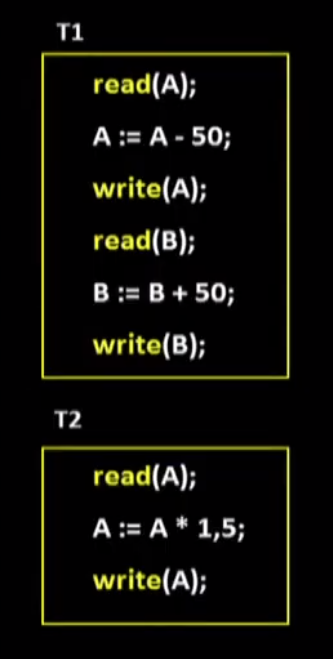
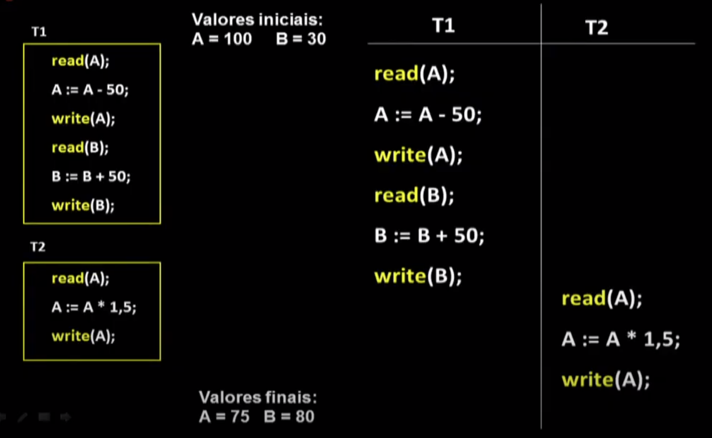
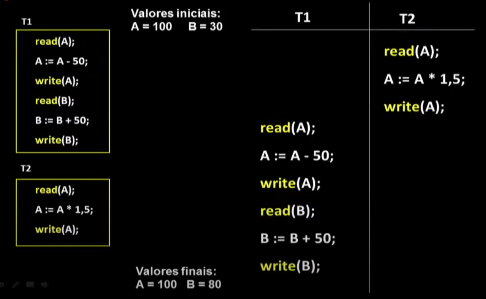
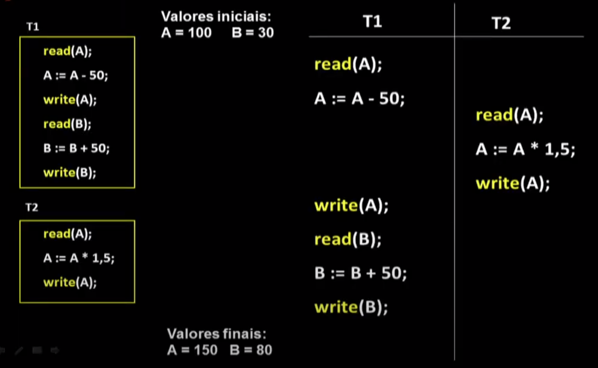

Disciplinas
-
BANCO DE DADOS-T01-2024-1 Concluído
Materiais
Vídeo 1 - Bancos de Dados - Aula 24 - Transações. sendProfessor ministrante: Sarajane Marques Peres.
Conteúdo
Transações.
Transações.
- Um dos papéis de um SGBD é processar transações: um conjunto de várias operações que são executadas sobre os dados do banco de dados, e que devem ser vistas pelo usuário do sistema como uma única unidade de processamento.
- A transferência de valores entre contas correntes é uma operação única do ponto de vista de um cliente de um sistema bancário, porém, dentro do sistema de banco de dados, essa transferência envolve várias operações.
- Uma transação forma uma única unidade lógica de trabalho.
- É essencial que todo o conjunto de operações da transação seja concluído, ou que, no caso de um problema (falha), nenhuma das operações do conjunto tenha efeito sobre os dados.
- O processamento das transações, realizado pelo SGBD deve garantir que:
- a execução de uma transação seja completa,
- seja possível executar várias transações de forma simultânea, sem que inconsistências de dados sejam geradas.
begin
start;
input (contaORIGEM, conta DESTINO, quantia);
temp := read (Saldo [contaORIGEM]);
if temp < quantia then
begin
output("Saldo insuficiente.");
end
else
begin
write (Saldo[contaORIGEM], temp - quantia);
temp = read (Saldo[contaDESTINO]);
write (Saldo[contaDESTINO), temp + quantia);
output ("Transferência completa.");
end;
return;
end
Operações necessárias para suportar a implementação de mecanismos para processamento de transações:
- Begin-transaction: marca o início de uma transação.
- End-transaction: marca o fim de uma transação.
- Commit-transaction: sinal de término com sucesso - as alterações realizadas pela transação podem ser "permanentemente" gravadas no banco de dados.
- Abort-transaction (rollback, l.e. reversão): sinal que a transação não terminou com sucesso - as alterações já realizadas pela transação não devem ter efeito sobre os dados do banco de dados, i.e, devem ser desfeitas.
- Undo: desfaz uma operação.
- Redo: refaz uma operação.
Diagrama de transição de estados para a execução da transação.
- O sistema de recuperação de falhas precisa tomar algumas providências.
- Transação deixa o sistema, com sucesso ou com falha. Os espaços e controles criados para ela são descartados no sistema.
Operações da lógica de implementação da transação que acessam os dados no banco de dados:
- read(x): transfere o item de dados x do BD para um buffer local alocado à transação que executou a operação de read. O valor de x é colocado dentro de uma variável de programa.
Operações da lógica de implementação da transação que acessam os dados no banco de dados:
- write(x): transfere o item de dados x do buffer local da transação que executou o write de volta para o BD. O valor da variável de programa é passado para o item de dado no BD (ainda no buffer - a gravação efetiva pode não ser imediata).
begin
start;
input (contaORIGEM, conta DESTINO, quantia);
temp := read (Saldo [contaORIGEM]);
if temp < quantia then
begin
output("Saldo insuficiente.");
end
else
begin
write (Saldo[contaORIGEM], temp - quantia);
temp = read (Saldo[contaDESTINO]);
write (Saldo[contaDESTINO], temp + quantia);
output ("Transferência completa.");
end;
return;
end
-----------------------------------------
read(A);
A := A - 50;
write(A);
read(B);
B := B + 50;
write(B);
Propriedades da Transação (ACID).
A-ATOMICIDADE:Ou todas as operações da transação são refletidas corretamente no banco de dados, ou nenhuma delas o será.
- Assegurar a ATOMICIDADE de uma transação é responsabilidade do SGBD, mais especificamente dos Componentes de Gerenciamento de Transações e de Recuperação de Falhas.
A execução de uma transação preserva a consistência do banco de dados. Ela inicia a partir de um estado consistente do banco e dados e finaliza deixando o banco de dados novamente em um estado consistente.
O resultado deve também atender as expectativas do processo real sob implementação.
- Assegurar a CONSISTÊNCIA de uma transação é responsabilidade do programador.s
Embora diversas transações possam ser executadas de maneira concorrente, o isolamento garante que cada transação siga seu curso sem considerar ações/operações executadas por outras transações concorrentes.
- Assegurar o isolamento é responsabilidade do Controle de Concorrência.
Depois que a transação finaliza com sucesso, as mudanças que ela faz no banco de dados devem persistir, mesmo se houver falhas no sistema.
- Assegurar a durabilidade é responsabilidade do componente do SGBD chamado de Recuperador de Falhas.
Execução concorrente.
Transação 1 e 2:  Representação da Concorrência (iniciando com T1): ✅  Representação da Concorrência (iniciando com T2): ✅  Representação da Concorrência (iniciando T1 e T2 ao mesmo tempo): ❌ Problemas em execuções concorrentes inadequadas ou decorrente de falhas:
- Problema de alterações temporárias.
- Problema de alterações perdidas.
- Problema do resumo incorreto.
Teoria da serialização.
O sistema de banco de dados deve controlar a execução concorrente de transações de forma a assegurar que:
- O resultado obtido após a execução concorrente de duas ou mais transações seja equivalente ao resultado obtido em alguma execução serial destas transações.
Uma execução concorrente deve ser serializável. Ou seja, considerando o mesmo conjunto de transações, uma execução concorrente deve ser equivalente a uma execução serial.
Transações:
Estes slides estão baseados na bibliografia:
- Elmasri, Ramez; Navathe, Shamkant B. Sistemas de Banco de Dados. Pearson, 6a edição, 808p., 2011.